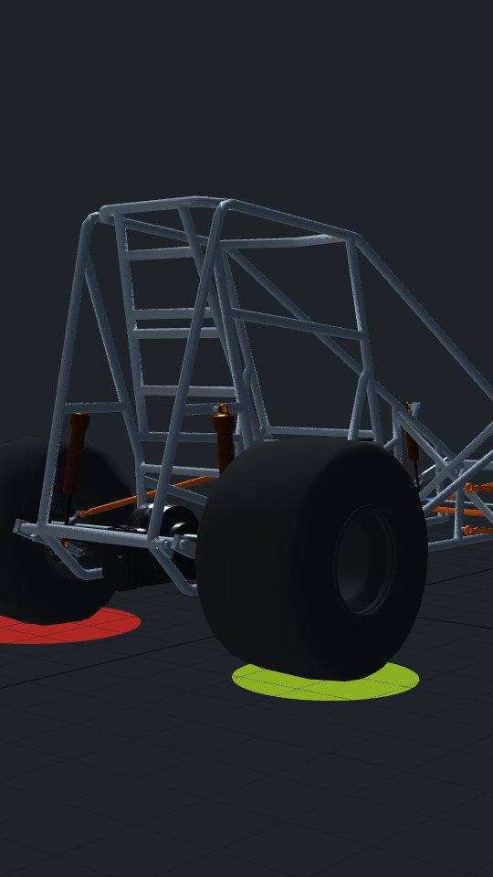
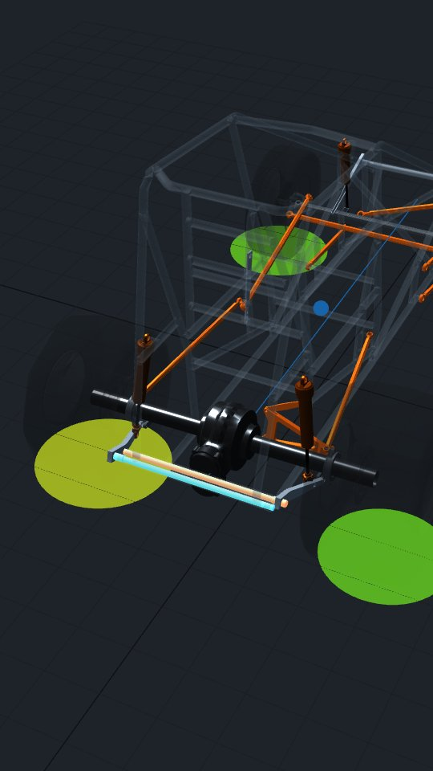
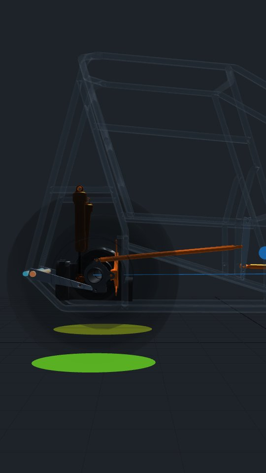
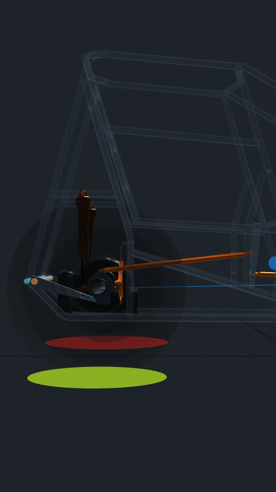
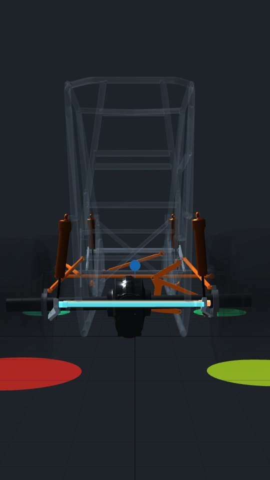
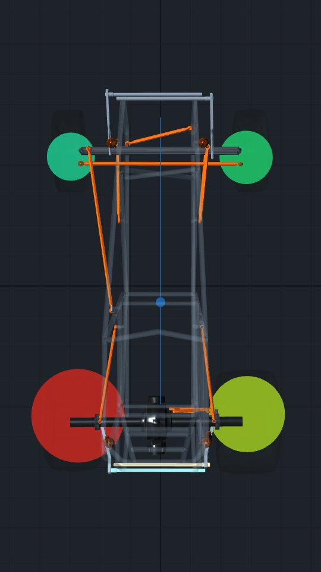
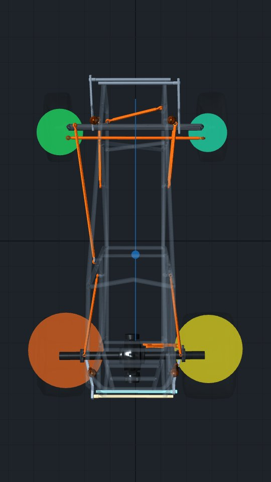

Vertical, about 42 seconds, no lateral g. The car accelerates at 0.8 g and the camera moves around it while the rear torsion bars glow. Every frame below is from the real model, rendered at the moment the scene describes. The blue bar is always the 0.875 and the orange bar is always the 0.975, so the colours follow the bar when it changes sides.
Long g 0.80Lateral g 0Weight 1,500 lbLeft / rear / cross 56 / 56 / 50%CG 19 inEngine 650 lb-ftGear 5.50Torque tube mount 29.85 inWing none
0:000:100:200:300:42
Scenes

0:00–0:03
Hook
Shot
Low rear three-quarter, solid car, already on throttle at 0.8 g.
Motion
Fast push in. The rear is already lifted. The tire load discs pulse once.
Highlight
None yet, so the car reads as a car first.
Text
Swap two bars. +57 lb on the LR.

0:03–0:08
The bars
Shot
Camera rises behind the car. The frame and tires fade to glass.
Motion
Car settles back to standing still so the bars can be seen. The bars light up one at a time, LR then RR.
Highlight
LR bar blue, RR bar orange, with a glow pulse as each label lands.
Text
LR 0.875 · RR 0.975


0:08–0:15
Throttle
Shot
Tight side view of the rear half. Before and after are shown side by side here; in the video it is one shot.
Motion
Throttle comes on. A drawn torque tube runs from the axle to the engine mount and pushes up at the mount. The rear rises 2.3 in, with a faint outline of the standing pose left behind.
Highlight
Torque tube orange, lift arrow green. The tube and engine are not in the CAD, so these are drawn on.
Text
The torque tube lifts the rear 2.3 in.

0:15–0:22
Why
Shot
Straight from behind, square to the axle.
Motion
Loop the lift from standing to 0.8 g twice. Each bar's glow dims as it unwinds; the RR fades faster. The chassis rolls 0.94°.
Highlight
Both bars, glow strength following each bar's load.
Text
Both bars unwind. The stiff one sheds more.

0:22–0:28
Setup A
Shot
Camera swings straight overhead, nose up, laid out like a setup sheet.
Motion
Load numbers count up from 0 as the discs grow.
Highlight
LR disc and number.
Text
LR 666 lb · RR 441 lb

0:28–0:35
Swap
Shot
Same overhead. Cut briefly to the rear view while the bars change sides, then back.
Motion
The two glowing bars slide out and trade places, so the orange bar ends up on the left. The discs resize and the numbers tick to the new loads.
Highlight
Bars during the swap, then the LR and LF discs as they change.
Text
Swap sides: LR 609 lb · RR 499 lb
0:35–0:42
Takeaway
Shot
Split screen: setup A on the left, setup B on the right, both overhead.
Motion
Both cars on throttle in sync. The LR numbers stay up while the rest dims. End on the brand mark.
Highlight
LR discs, then the LF disc for the last line.
Text
Stiffer RR bar = more LR on throttle. And the LF goes 56 lb lighter.
The numbers, 0.8 g on throttle
Setup A LR 0.875 / RR 0.975
Setup B LR 0.975 / RR 0.875
A minus B
LF load, lb
176
232
−56
RF load, lb
217
161
+56
LR load (bite), lb
666
609
+57
RR load, lb
441
499
−58
Rear wheel rate LR / RR, lb/in
94 / 179
145 / 116
Rear lift, in
2.30
2.28
Chassis roll, °
0.94
−0.19
Torque tube lift at mount, lb
737
740
Forward bite (rear grip left), lb
206
213
−7
For you to decide
The whole effect comes from the torque tube lift. With engine torque set to 0, the rear squats 0.8 in instead of lifting, and the split moves only 21 lb the other way (LR 577 vs 598). That could be a strong extra beat ("take away the torque tube and it flips"), or it could muddy a 40 second video. Add it, or leave it out?
The lift numbers rest on 650 lb-ft and the 5.50 gear, which are both placeholders. At 0.8 g the axle torque is capped by rear grip (the tires would spin), so the engine figure barely changes the result. The 29.85 in mount distance does matter. Are those close to the car you want to show?
Forward bite goes the other way by 7 lb. Setup A puts 57 lb more on the LR, but the rears together have slightly less grip left because the load is less even. The video only says LR load. Is that the bite you want to talk about?
Both setups weigh the same on the scales (375 / 285 / 465 / 375), because ride heights are held. "Same scales, different bite" would make a good hook, but it shows the car standing still, which you have kept out of the videos so far. Use it or not?
The 2.3 in lift is hard to see at full-car scale (about 10 pixels in a side view). The plan is a tight rear shot with an outline of the standing pose. Should I exaggerate the motion, or keep it true to scale?
The brand mark. Use the Short Track CAD mark on this one, or leave it off?